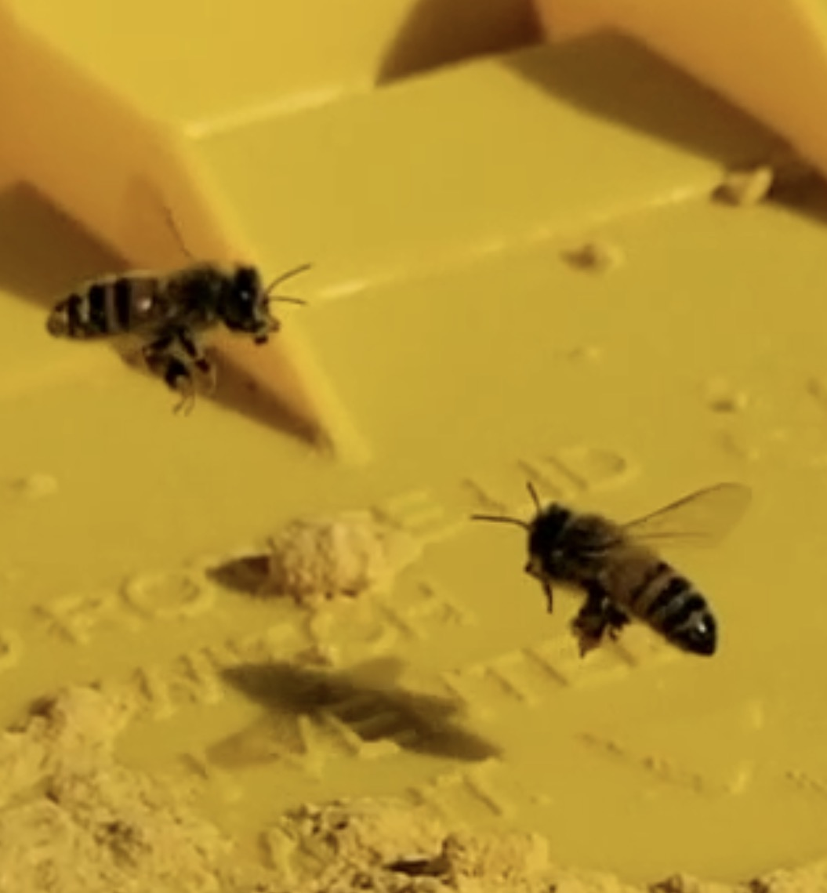
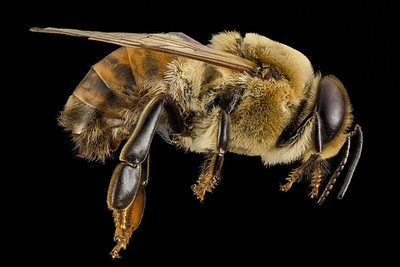
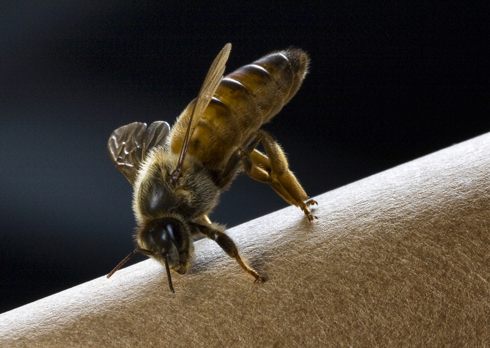
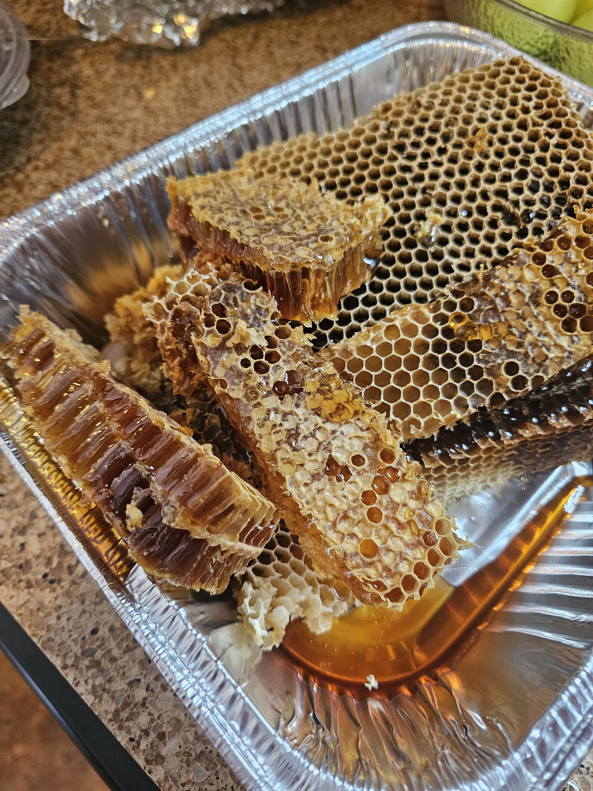
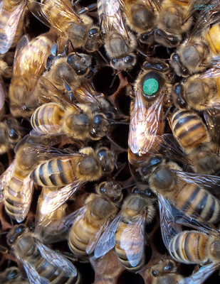
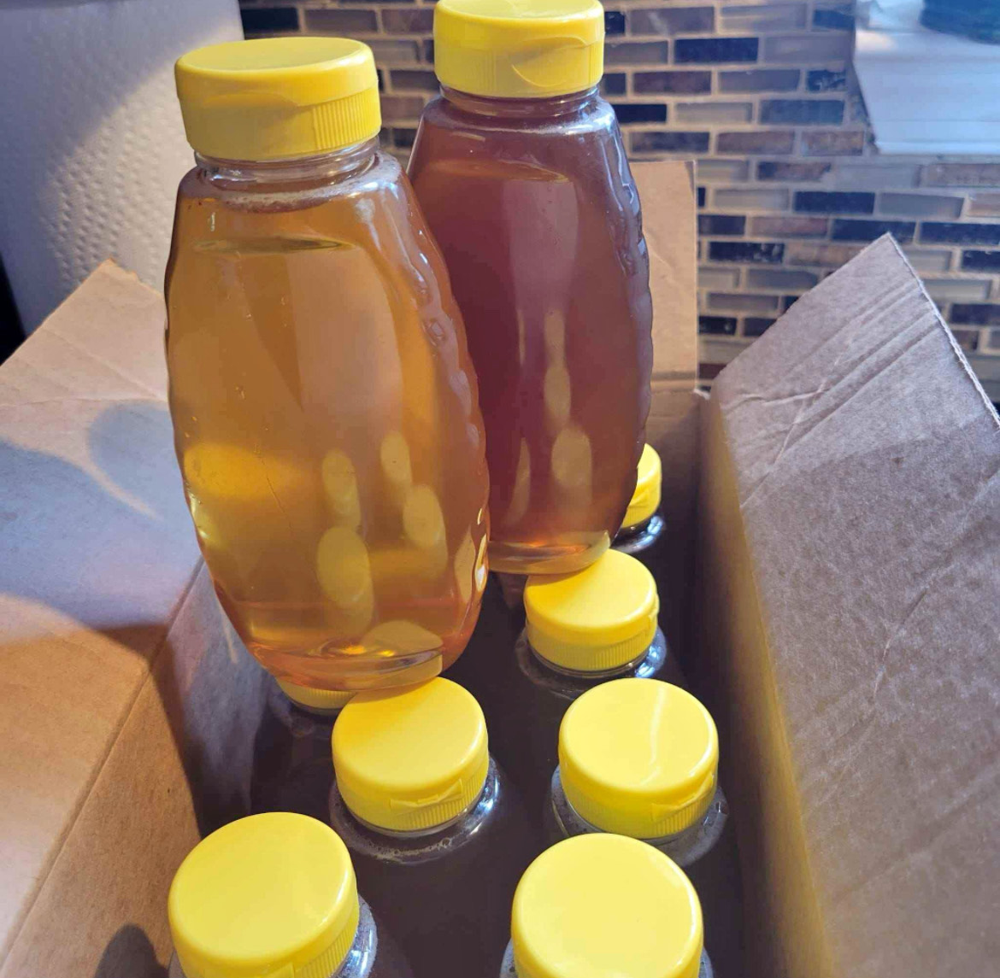
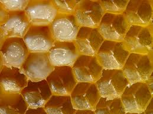
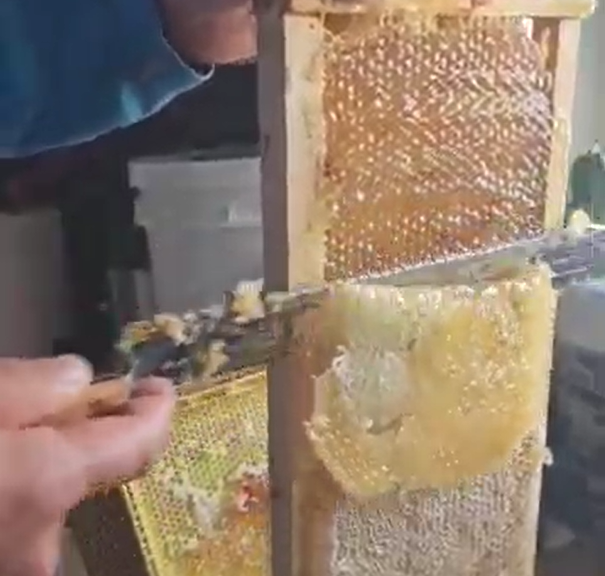

Worker bees maintain the hive, gather nectar, and care for larvae.

The drone bee is a male bee whose primary role is to mate with the queen.

The queen bee is the only fertile female in the hive and lays eggs.

Honeycombs are the hexagonal wax structures where bees store honey and pollen.

Queen markings are unique dots the beekeeper paint on the queen bee.

Honey is a sweet, viscous substance produced by bees from flower nectar.

Larvae are the young of bees, which develop in the hive.

Wax is a natural substance produced by bees to build their hives.
Worker bees are one
image by Sue Boo from USGS Bee Lab
Drone bees are ....
Image by Jonathan Wilkins from Wikimedia Commons
Queen bees are ....
Honeycombs are ....
Image by Steve Burt from Flickr
Queen Markings are ....
Honey is ....
wax is ....
Image by Waugsberg from Wikimedia Commons
Larvae are the young bees that are still developing in the hive.